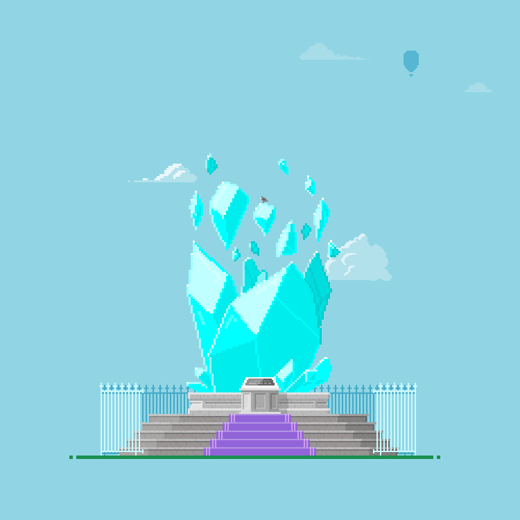
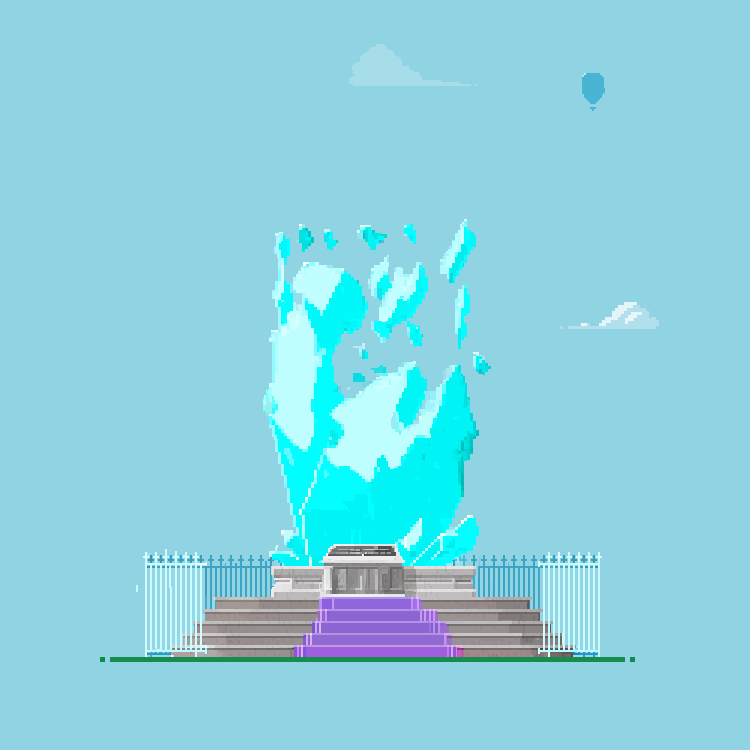
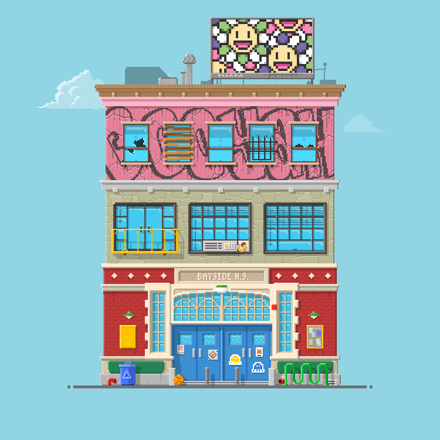
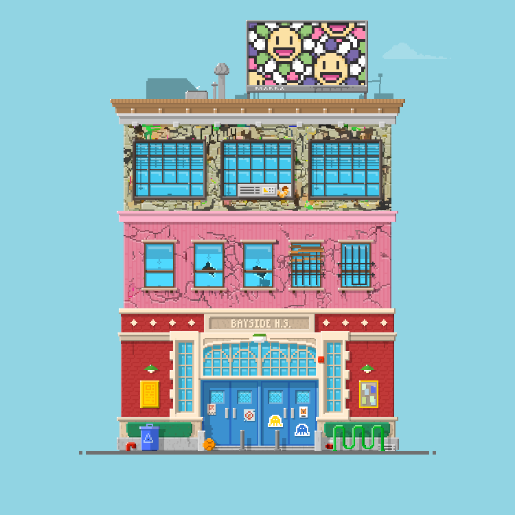
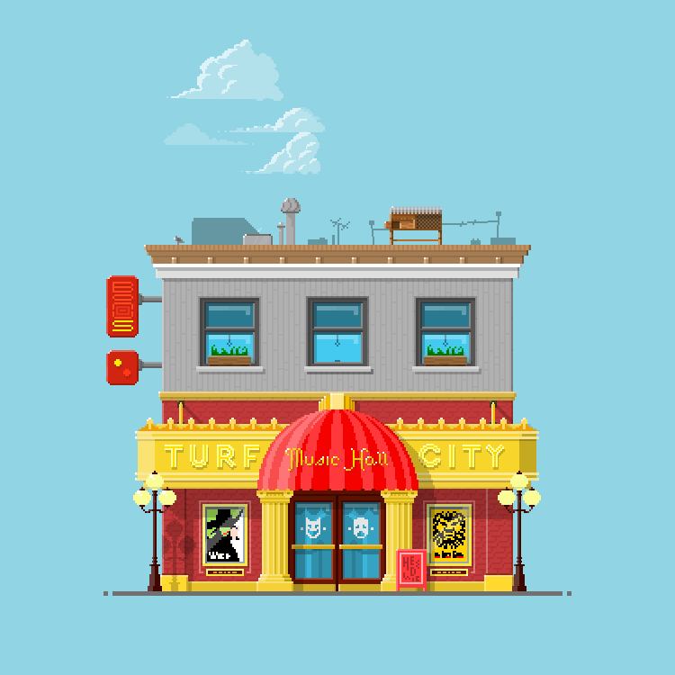

turfusion · generative model
Pixel art from a list of attributes.
turfusion is a diffusion model that draws pixel-art buildings the way the artists of a collection drew them: from the attributes that describe each plot.
What it does
Each plot in the collection is described by attributes: the building, its details, the pet in the window
(Pet: Tabby Cat). turfusion learns to draw a plot from such a list, so it can draw the plots that
exist and ones that never did, in the collection's own hand-drawn style.
How it is built
- A UNet denoiser. The attributes are embedded once with CLIP's text encoder; their pooled mean steers every block (FiLM through adaptive group norm), and the full sequence is attended to with cross-attention at the coarse resolutions. Training never needs CLIP itself.
- A cosine noise schedule with v-prediction, and a DDIM sampler with classifier-free guidance.
- Trained from scratch on one 8 GB consumer GPU, in several runs: the full corpus, the art's native grid, fine-tuning for rare plots and for detail.
Trained inside video memory
The whole corpus goes to the GPU once, at start-up: the 5,041 plots at their native 750 × 750, run-length encoded
losslessly into under a gigabyte, and decoded for each batch on the GPU itself with a single
repeat_interleave. After that the training loop moves nothing but a few bytes of bookkeeping between
the computer and the GPU per step: decoding, normalisation, noising, the forward and backward passes and the weight
averaging all happen there.
A dashboard written with Python's standard library alone shows the run and the GPU's telemetry on the local
network.
Pixel-perfect
Hand-drawn pixel art has few colours, about 313 distinct ones per plot, and perfectly flat regions. A diffusion model working in continuous colour leaves a smooth bias of a few levels across an image, which is invisible to the eye and fatal to the pixel grid. turfusion comes with a measurement suite that scores a sample against the art's own statistics, and a region-level flattening step: connected regions whose neighbouring pixels differ by almost nothing are snapped to the palette as one, where snapping pixel by pixel had only made the patchiness worse.
Real plots, and turfusion's drawings of them
Left, a plot as its artists drew it, from the holdings of Turf's largest plot holder. Right, what turfusion draws from that plot's attributes. turfusion learned from the whole collection, so a drawing of an existing plot shows how well it holds the style and the particulars: the plot type, the pet, the clouds and the signs all come from the attribute list.






Real plots: the Turf collection (contract 0x55d8…44c6), as held by its largest holder at the
time of writing. Drawings: turfusion, 250 DDIM steps, guidance 3, one sample each.
How Kristian architected it
One constraint shaped everything: a single 8 GB consumer GPU, used completely, and nothing else. From that came the design:
- The GPU holds the data, not just the model. The corpus is run-length encoded losslessly and uploaded once; every batch is decoded on the card. Training at the art's native grid runs at batch size one with gradient accumulation, and an exponential moving average of the weights is what samples.
- Conditioning is computed once, elsewhere. Every
trait: valuestring is embedded with CLIP's text encoder ahead of time and shipped as a table, so the training machine never loads CLIP. The pooled embedding steers every block through adaptive group norm; the full attribute sequence is attended to with cross-attention at the coarse resolutions, where composition is decided. - A plain, well-understood objective. A cosine schedule with v-prediction; classifier-free guidance by dropping the conditioning for a tenth of the training examples; DDIM sampling, 250 steps at native resolution.
- A curriculum, not one run. The whole collection first, at a small canvas; then the art's native 750-pixel grid; then fine-tuning that weights the rare plots. The last pass came from a measurement: a sweep of sampling steps showed the sampler saturated, and snapping to even the true palette left the residual, so the remaining error was the model's, at the low-noise end of the schedule, where fine detail is decided. The final fine-tune triples the training density there.
- Pixel art is measured, not eyeballed. Samples are scored against the hand-drawn art's own statistics, and a region-level flattening step turns the model's smooth colour drift into the flat, few-coloured regions of real pixel art.
- Runs look after themselves. Supervisor scripts restart interrupted training, and a dashboard written with Python's standard library alone shows the run and the GPU on the local network.
Weights
The weights are not yet open, but may be available on request: get in touch.
← kdro.ai